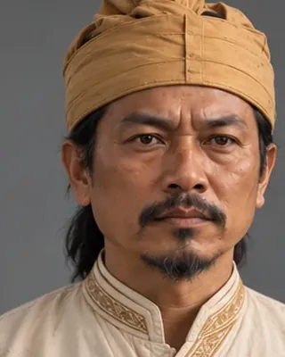

c. 1228 (office created by Sukaphaa) · First Burhagohain

The Burhagohain and Borgohain offices were created by Sukaphaa. The personal names given in the project catalogue are unverified.
Record confidence: low.
Open interactive profile
1215–1228